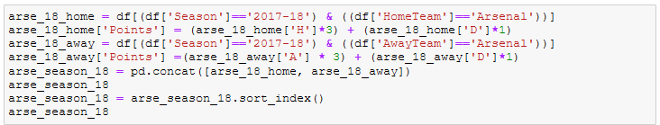
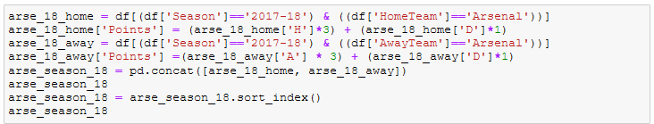

Exploring the data, I quickly noticed the full time results (FTR) column was defined categorically with ‘H’, ‘A’ or ‘D’ to indicate a home win, away win or draw respectively. Knowing I wanted to add a points column later down the line I decided to transform that column to a numerical one and used the .get_dummies attribute, and concatenate the two dataframes.
Moving on I wanted greater insight into the results Arsenal achieved by comparing their home and away fixtures. Thankfully for Arsenal fans throughout the seasons they have maintained an incredible winning statistics at home (Highbury or The Emirates) and incredibly only losing 54 times from seasons 1994-2018. Even when they don’t win they’re almost twice as likely to draw the game illustrated in the first plot above. On the road they are still successful generally however if a win is not attained there is near 50:50 chance whether they lose or draw.
I desired to plot each seasons points tally to draw any conclusions I could, so I started by breaking down each seasons results and add a points column, the ‘arse_season_18’ is one example of the 2017/18 season. Each season followed the same process producing their own dataframe. Following more data cleaning I managed to create the dataframe required to plot the graph I desired. Reflecting back on my code I can already see areas of improvement, for instance the need to make the ‘Seasons = []’ list could have been done differently that would have made this process easier, but I suppose you learn new things with every project undertaken.
Finally, the graph at the bottom is what I was working towards, the points tally of each season from 1993/94 to 2017/18. The first interesting finding was the poor start of seasons 94 and 95, Arsenal acted quickly to appoint the future legend of the club Arsene Wenger as manager joining the club in October 1996. Subsequently in his first full season at Arsenal he steered the club to their first Premier League title in the 1997/98 season with 78 points, a tally he matched in the following year but came 2nd to Manchester United. Interestingly there were seasons after where Arsenal would accumulate more points than of that in 1998 but miss out on the title which I believe is indicative of the standard of the football in Premier League improving – and perhaps a new idea to investigate.
Before we finish it would be a shame not to mention two outstanding seasons of 2002 and 2004 with points of 87 and 90 respectively. In 2002 Arsenal won the league without being beaten away from home and somehow eclipsed that incredible achievement by not losing a single game in 2004.